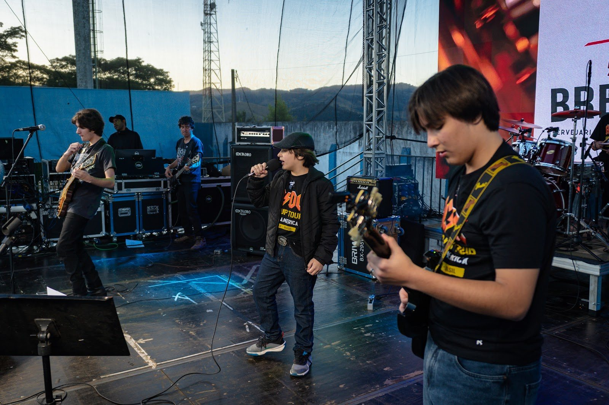
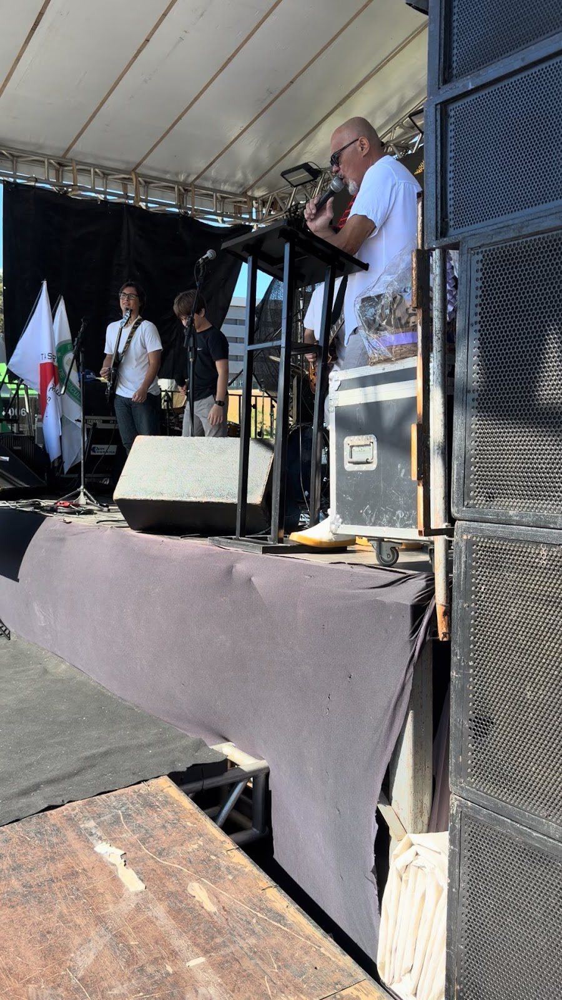
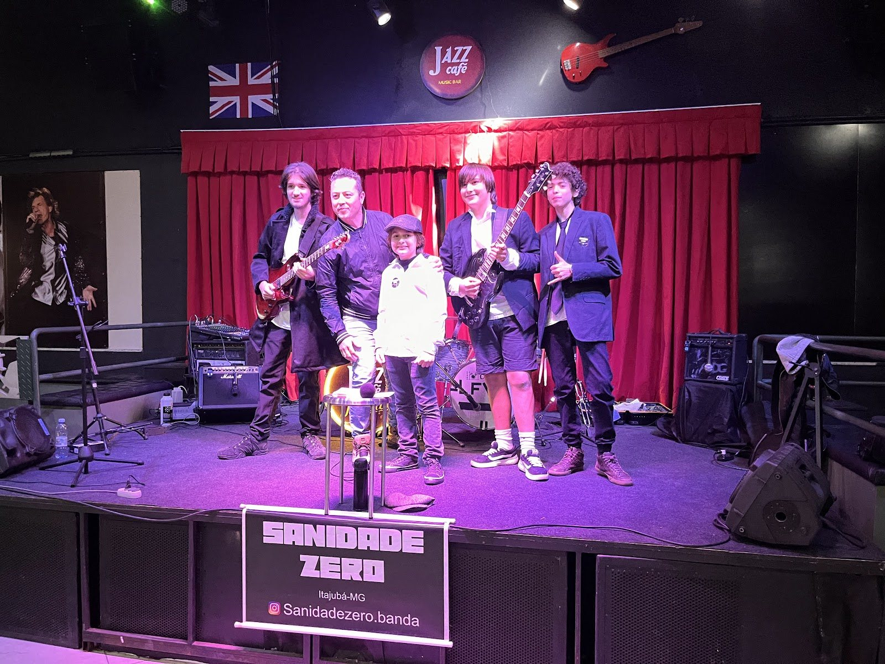
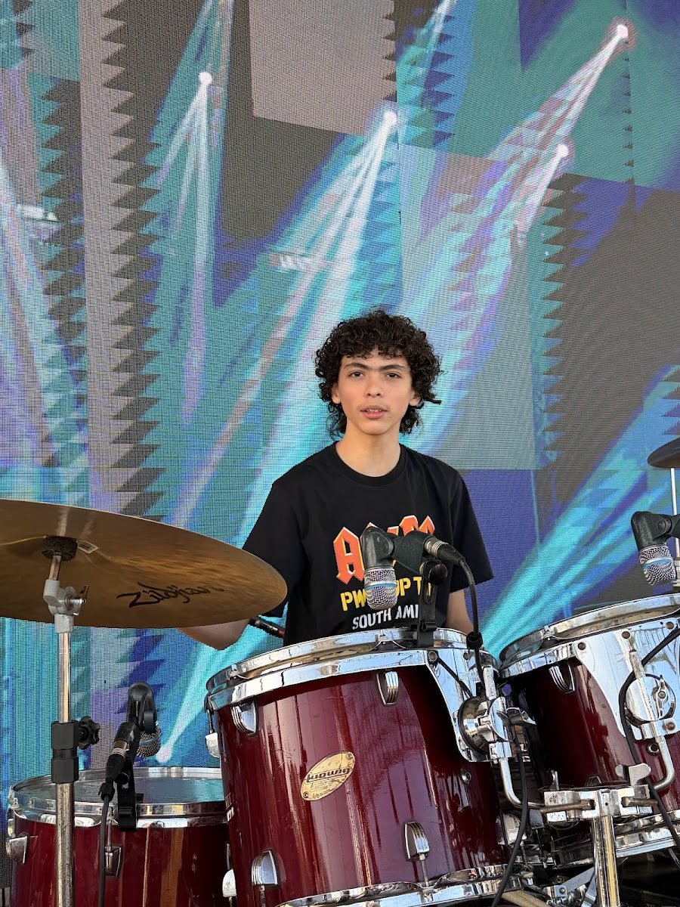
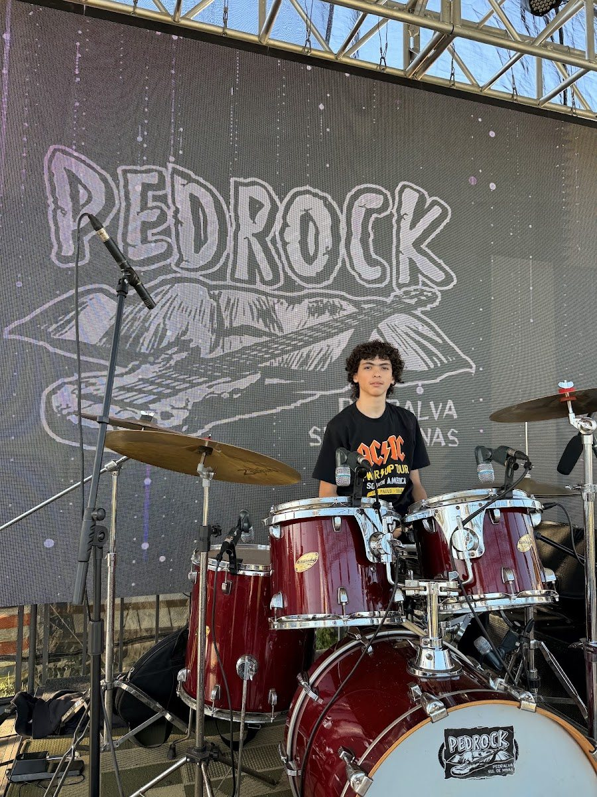
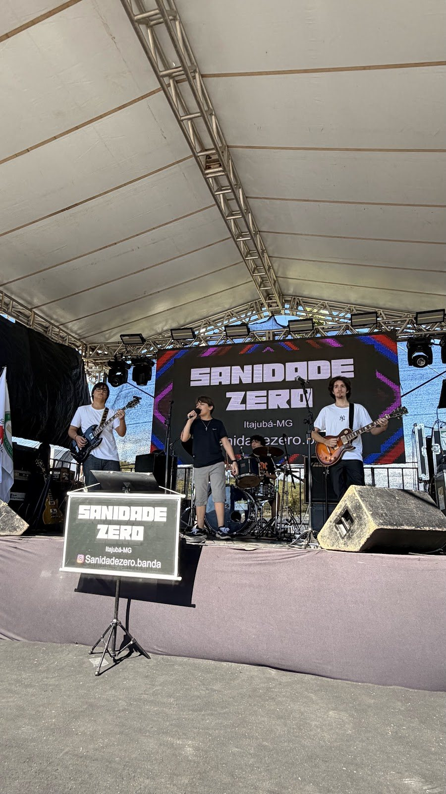
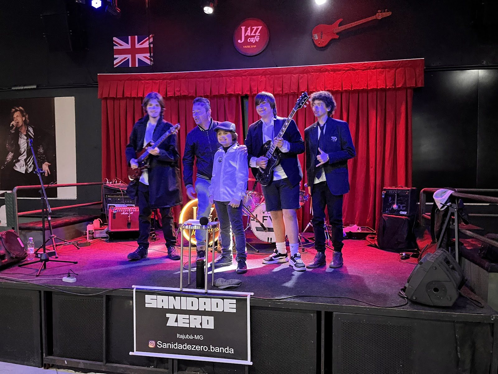
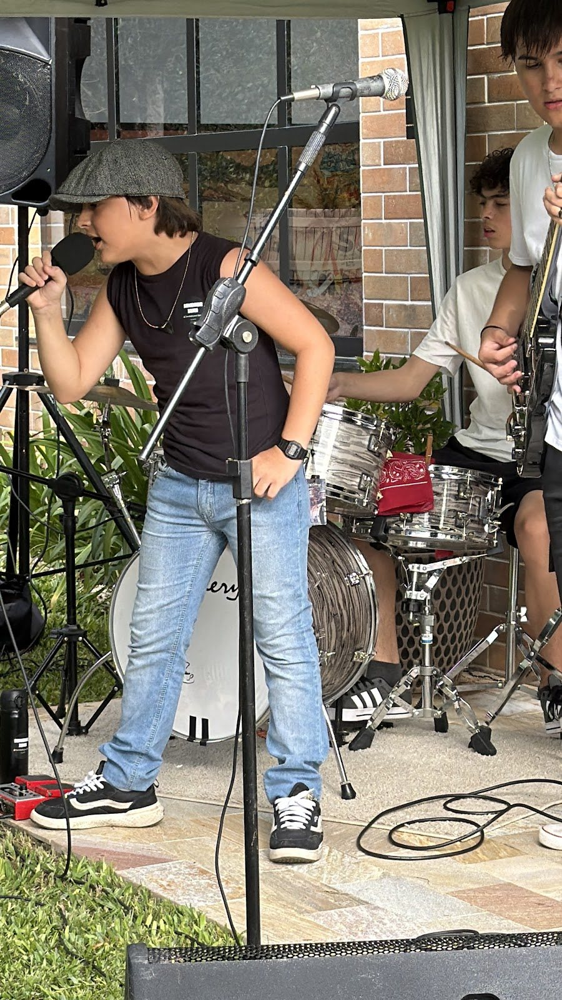

O som que atravessa gerações, tocado ao vivo com a urgência de quem nasceu para o palco. Longa vida ao Rock N' Roll.
Contrate a bandaPresença real, público fiel e palco de verdade.
Rock clássico com energia de festival.
A Sanidade Zero é uma banda de rock de Itajubá/MG dedicada aos grandes clássicos dos anos 70 e 80. Com repertório que atravessa gerações e presença de palco marcante, a banda se apresenta em festivais, festas de cidade, encontros de carros antigos, aniversários, bares e cafés — sempre ao vivo, com a entrega que o rock pede.
Quem sobe no palco.

Vocal

Guitarra

Guitarra

Bateria
A Sanidade Zero se encaixa no seu evento.
Show completo de rock clássico para grandes públicos.
A trilha perfeita para máquinas clássicas: rock 70/80 ao vivo.
Energia de festival na sua festa, com repertório que todo mundo canta junto.
Formato intimista sem perder a pegada do rock ao vivo.
A banda em ação.



